Configuración de sistemas operativos¶
Configuración de sistemas operativos¶
Los sistemas operativos actuales son muy flexibles en cuanto a configuración y personalización a través de una aplicación llamada «Panel de control», «Configuración» o «Ajustes».
Aspectos más destacables que se pueden configurar:
- Usuarios que pueden acceder al sistema y sus roles (Administrador, usuario, etc.)
- Periféricos (Ratón, teclado, altavoces, impresora, etc.)
- Programas por defecto para abrir los distintos tipos de archivos.
- Conexiones (Cable ethernet, wifi bluetooth, etc.)
- Antivirus y antispyware.
- Control de notificaciones.
- Bloqueo de pantalla.
- Fondo de pantalla.
- Nivel de brillo de la pantalla.
- Tipo y tamaño de letra.
- Accesibilidad

Configuración de dispositivos Ubuntu 24.04 LTS¶
Ubuntu es una de las distribuciones de Linux más populares, que ofrece un entorno amigable para principiantes. El entorno de trabajo es similar a Windows, pero ofrece programas propios.
Iniciar sesión¶
Para desbloquear el equipo, debes presionar enter y aparecerá la pantalla de inicio de sesión, donde puedes insertar tu contraseña. Al igual que ocurre con Windows, si dejas de usar el ordenador aparecerá la pantalla de bloqueo que mostrará la fecha y la hora.
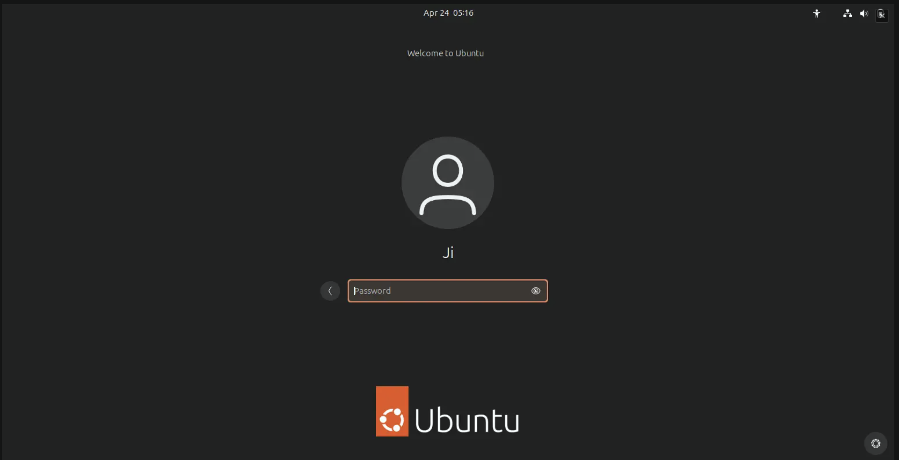
Cerrar sesión¶
Para permitir que otros usuarios usen su equipo, puede salir de la sesión, o seguir conectado y simplemente cambiar de usuario. Si cambia de usuario, todas las aplicaciones seguirán funcionando y todo estará donde lo dejó cuando vuelva a iniciar sesión.
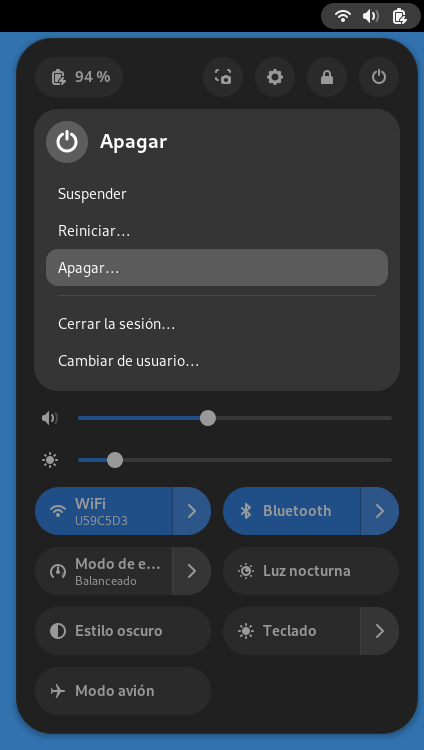
Reloj, calendario y citas¶
Haciendo click sobre el reloj disponible en la parte superior de la barra para acceder a la hora actual, lista de tus próximos eventos y notificaciones.
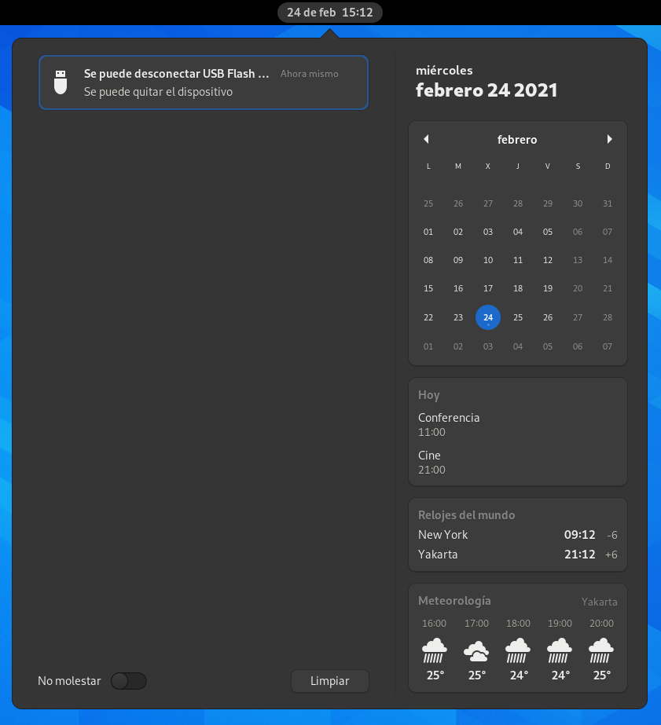
Información del sistema¶
Haz clic en el menú del sistema, en la esquina superior derecha, para administrar la configuración del sistema y el ordenador. La parte superior del menú muestra el indicador de estado de la batería y los botones para iniciar la configuración y la herramienta de captura de pantalla. El botón de encendido te permite suspender o apagar el ordenador, o permitir que otra persona acceda rápidamente sin cerrar sesión. Los controles deslizantes te permiten controlar el volumen del sonido o el brillo de la pantalla.
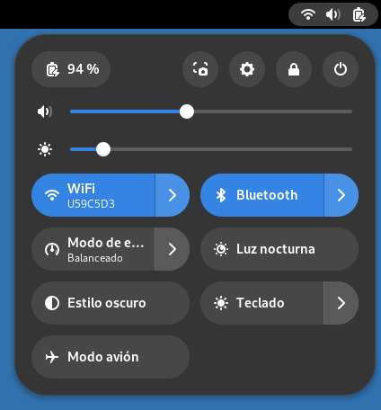
Cuentas de usuario¶
Cada persona que utiliza el equipo debe tener una cuenta de usuario diferente. Esto le permite mantener sus archivos separados de los suyos y elegir su propia configuración. También es más seguro. Solo puede acceder a una cuenta de otro usuario si conoce la contraseña.
Áreas de trabajo¶
Las áreas de trabajo se refieren a la agrupación de ventanas en su escritorio. Puede crear varias áreas de trabajo, que actúan como escritorios virtuales.
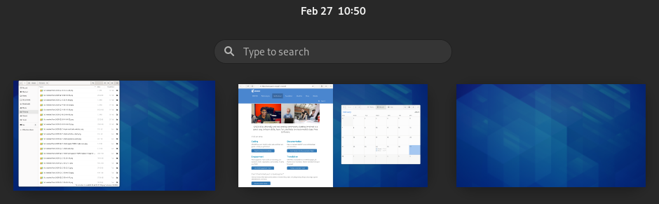
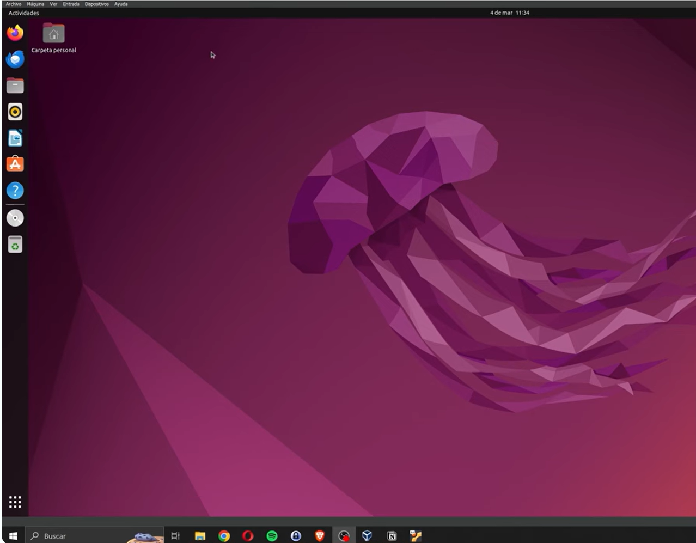
Aplicaciones¶
El Centro de Aplicaciones de Ubuntu 24.04 permite instalar, actualizar y eliminar programas de manera sencilla y segura, especialmente para usuarios que están empezando a usar Ubuntu pues no necesitas usar la terminal. Es una herramienta gráfica que centraliza el acceso a las aplicaciones disponibles en el sistema operativo.

Funciones principales¶
- Explorar aplicaciones: muestra un catálogo organizado por categorías (educación, programación, oficina, juegos, etc.) para encontrar fácilmente lo que se necesita.
- Buscar por nombre o palabra clave: facilita localizar programas concretos o relacionados con una función específica.

- Instalar programas: con un solo clic se pueden añadir nuevas aplicaciones al sistema.
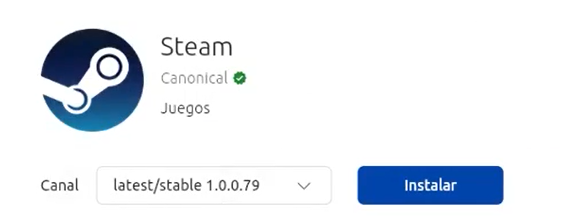
- Actualizar software: permite mantener las aplicaciones al día, mejorando su rendimiento y seguridad.
- Desinstalar programas: ofrece la opción de eliminar aplicaciones que ya no se utilizan.
Actividades¶
📝 AA3.9 Configuración de Linux¶
(C.ESP2 / CE2.3 / IC1-3p)
- Haz una captura del escritorio de la distribución de linux que has instalado.
- Busca aplicaciones preinstaladas en tu distribución de Linux. Haz una captura de pantalla y pégala en el documento.
- Busca la Configuración del Sistema y haz una captura de pantalla. Pégala en el documento.
- Cambia la imagen del escritorio y haz una captura de pantalla. Pégala en el documento.
- Crea una carpeta con tu nombre en el escritorio. Haz una captura de pantalla. Pégala en el documento.
- Abre el navegador de archivos y accede hasta la unidad C:/. Haz una captura de pantalla. Pégala en el documento.
- Abre la configuración del reloj y calendario. Haz una captura de pantalla. Pégala en el documento.
- Indica con el icono con el cual podemos alternar entre los escritorios múltiples. Haz una captura de pantalla. Pégala en el documento.
📝 AA3.10 Instala y configuración de aplicaciones en Linux¶
(C.ESP2 / CE2.4 / IC1-3p)
-
Abre el Centro de Aplicaciones de Ubuntu e instala las siguientes aplicaciones:
- VLC: programa que te permite reproducir audio
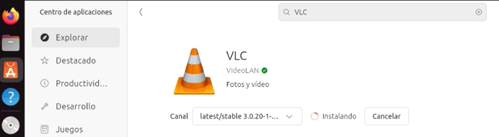
VLC - LibreOffice: programa que te permite trabajar con procesadores de texto, hojas de cálculo..
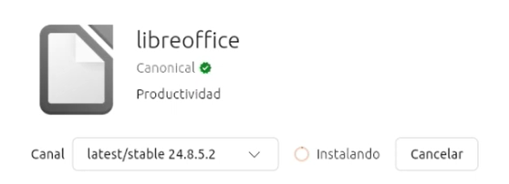
LibreOffice - Chromium: Es un navegador web de código abierto compatible con todas las extensiones de google chrome. Tiene mayor privacidad y mejor rendimiento en Linux.
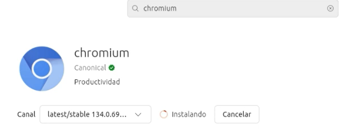
Chromium - Stacer: Es una aplicación para monitorizar el funcionamiento de nuestro sistema. Nos permite obtener estadísticas del uso de la RAM, CPU y almacenamiento. También nos indica información sobre nuestro equipo y nos permite eliminar archivos temporales y cache.
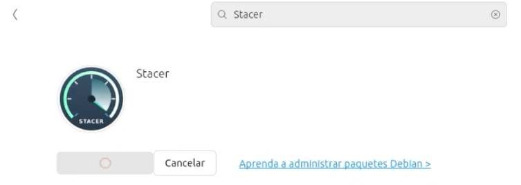
Stacer -
Abre todas las aplicaciones. Haz una captura de pantalla y pégala en el documento.
- En el caso de Stacer además de pegar captura de pantalla de la página principal, indica los pasos para eliminar archivos temporales.
💡 AAP3.11 Configura y Personaliza Ubuntu 24.04 en VirtualBox¶
(C.ESP2 / CE2.3 / IC1-3p)
Con la ayuda del siguiente video crear una carpeta compartida entre tu ordenador físico y tu máquina virtual de linux.
🔨 AAR3.12 Primeros pasos con Linux¶
(C.ESP2 / CE2.3 / IC1-3p)
Visualiza el siguiente vídeo e intenta seguir sus pasos para descubrir el sistema operativo Linux. Haz captura de pantalla de todas las configuraciones que realices.